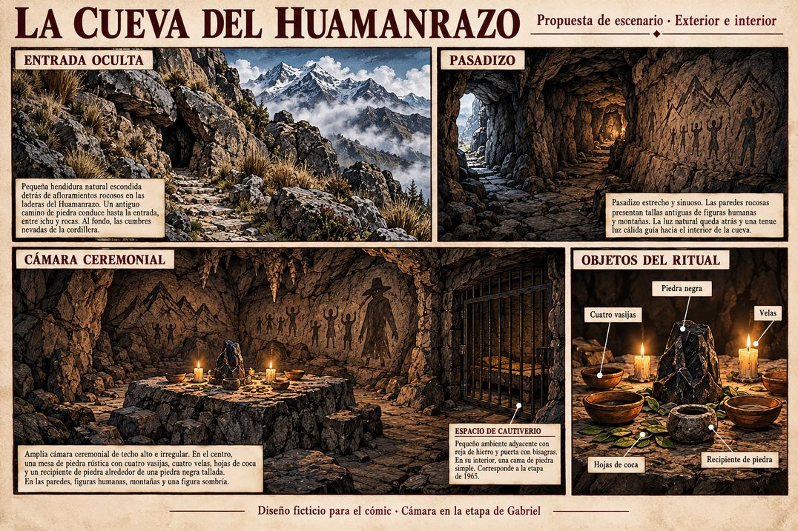
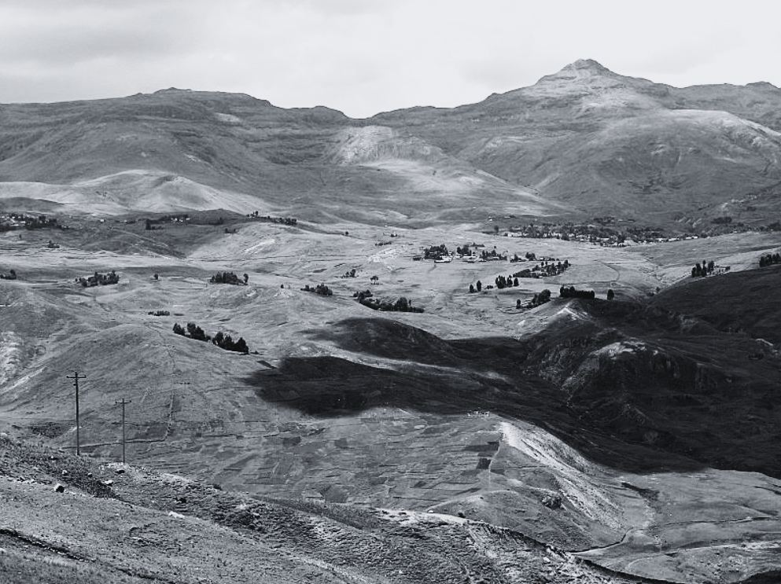
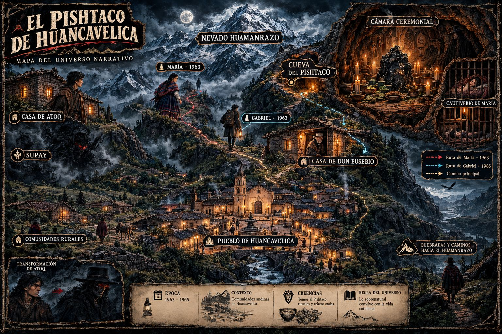
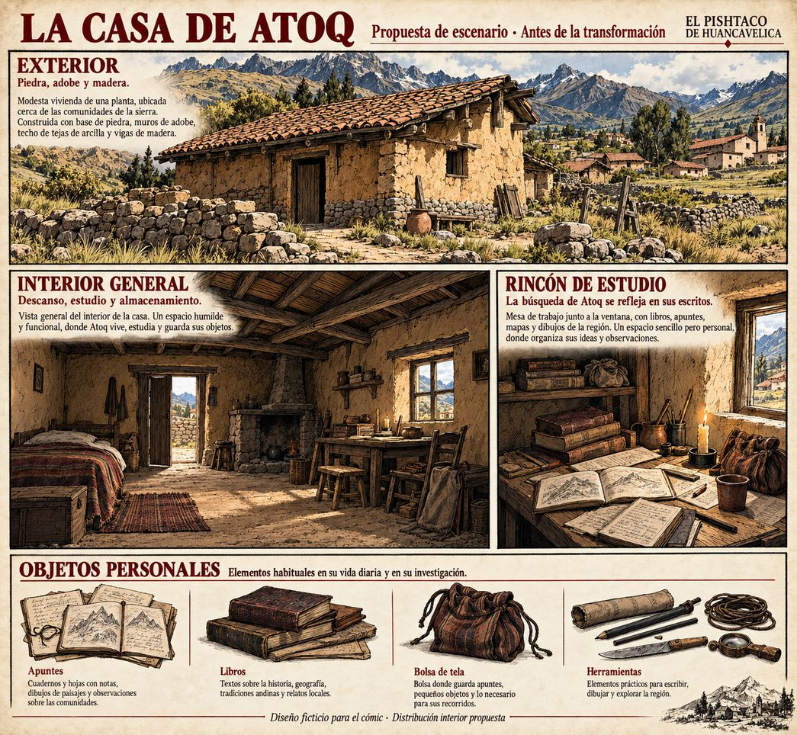
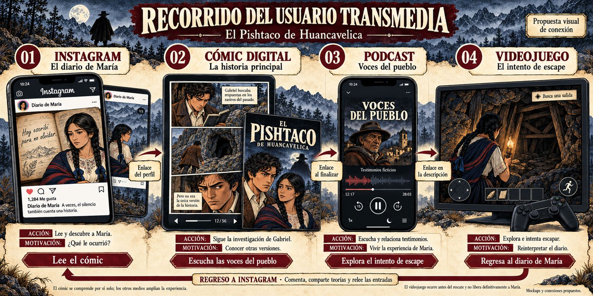

La cueva del Huamanrazo
Exterior e interior: entrada oculta, pasadizo, cámara ceremonial y espacio de cautiverio. Objetos del ritual: piedra negra, velas, vasijas y hojas de coca.
Adéntrate en el misterio de la desaparición de María Quispe. Conecta pistas, examina los pactos ancestrales y enfréntate al ritual en las entrañas del nevado Huamanrazo.
Atoq, obsesionado con vencer la muerte, encontró una antigua cámara ceremonial en una cueva de las faldas del nevado Huamanrazo. Allí invocó a Supay, una antigua divinidad vinculada al mundo de los muertos, y realizó un ritual para obtener la vida eterna. Como castigo, su cuerpo murió, pero su espíritu quedó atrapado entre el mundo de los vivos y los muertos, convirtiéndose en el Pishtaco.
Con el tiempo, el Pishtaco comenzó a desaparecer personas para obtener su grasa y esencia vital. Años después, Don Eusebio descubrió su existencia y pactó con él para conseguir la vida eterna.
En 1963, María Quispe desapareció después de encontrarse con el Pishtaco y Don Eusebio. Dos años después, su hermano Gabriel, un detective, regresó a Huancavelica para buscarla. Las pistas lo llevaron hasta la cueva del Huamanrazo, donde encontró a María encerrada y descubrió que sería utilizada en el último ritual.
Gabriel logró romper la piedra negra, destruyendo el ritual y escapando con María. La cueva se derrumbó y Eusebio y el Pishtaco desaparecieron.
Sin embargo, días después, Gabriel encontró el sombrero negro del Pishtaco junto a una nota:
«La muerte no fue el final.»
Entonces escuchó tres golpes entre la neblina.

Toc. Toc. Toc.
El Pishtaco quizá seguía vivo y la historia todavía no había terminado.
Toca los puntos rojos del mapa, o los nombres de abajo, para abrir la ficha de cada lugar y personaje. Los que ya viste se oscurecen.

Elige un retrato para abrir su expediente: quién es, sus expresiones, su vestuario y sus objetos.
Eres el investigador. En cada escena, juega la carta del personaje que corresponde. Si aciertas, se revela lo que pasó y la pista se suma a tu tablero.

Exterior e interior: entrada oculta, pasadizo, cámara ceremonial y espacio de cautiverio. Objetos del ritual: piedra negra, velas, vasijas y hojas de coca.

Antes de la transformación. Casa de piedra, adobe y madera cerca de las comunidades. Su rincón de estudio refleja la búsqueda de Atoq: apuntes, libros, bolsa de tela y herramientas.
La historia se cuenta en cuatro piezas conectadas. Cada una lleva a la siguiente: el cómic se entiende por sí solo, y los otros medios amplían la experiencia.
